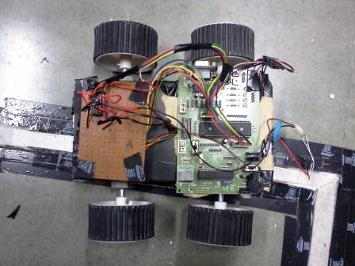

Electronics freak, hardware tinkerer, movie buff, android lover and blogger
Line Follower Robot v2.0
During semester 7, I had taken robotics course. It was the first time this course was offered at DA-IICT. As always, the first project to be done in any robotics course is to make a line follower robot. So this is the robot which I build for this course.
This robot has ATmega32 as its controller. The L293d motor driver is connected to the controller and the wheels. The sensors contain a panel of IR leds. When the led is on white surface, the reflection is more. When it is on black surface, the reflection is less. Using this technique, a successful line follower was built.
I also hooked up Sharp distance sensor to it and so this robot stops at 50 cm from any wall or human obstacle.
Below is the top view of the robot
